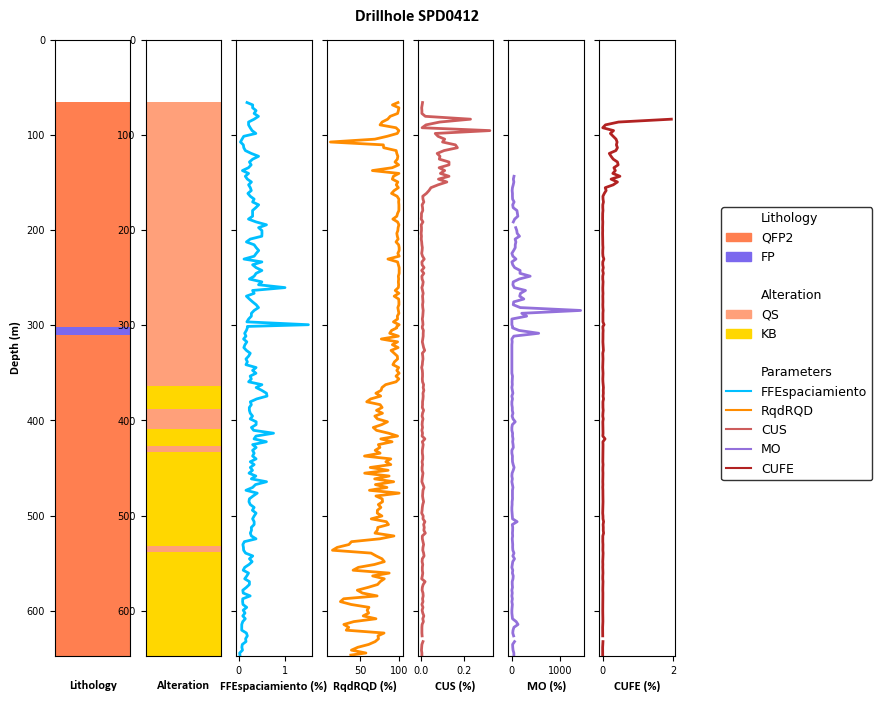

#Import libraries
import pandas as pd
import numpy as np
import matplotlib.pyplot as plt
import matplotlib.patches as patches
from matplotlib.gridspec import GridSpec
import matplotlib.lines as mlinesStriplog app
This app aims to facilitate quick visualisation of drillhole data
# Load collar data to get max depths for each hole
collar_data = pd.read_csv('./data/collar.csv')# Print the headers of the merged table
merged_data=pd.read_csv('./data/merged_data.csv')print(merged_data.columns.tolist())['holeid', 'from', 'to', 'Alteracion', 'PP_MINTYPE_calculadoPtXt', 'AG', 'AS', 'Au_ppb_BEST', 'ClT_kgt_BEST', 'CO3_pct_BEST', 'CUCN', 'CUFE', 'CUS', 'CUT', 'FE', 'FET', 'MO', 'PP_AS_PP', 'PP_CC_2CSR', 'PP_CC_PP', 'PP_COV_2CSR', 'PP_COV_PP', 'PP_CPY_2CSR', 'PP_CPY_PP', 'PY_BEST', 'S', 'S2', 'FFEspaciamiento', 'FFNumFracAb30Grad', 'FFNumFracAb60Grad', 'FFNumFracAb90Grad', 'FFrecFrac', 'FFTotalFracAbSell', 'Litologia', 'RqdRQD']print(merged_data.head()) holeid from to Alteracion PP_MINTYPE_calculadoPtXt AG AS \
0 DMH0003 0.0 8.0 NaN NaN NaN NaN
1 DMH0003 8.0 10.0 NaN -99 -99.0 -99.0
2 DMH0003 10.0 28.0 NaN NaN NaN NaN
3 DMH0003 28.0 30.0 NaN -99 -99.0 -99.0
4 DMH0003 30.0 48.0 NaN NaN NaN NaN
Au_ppb_BEST ClT_kgt_BEST CO3_pct_BEST ... S S2 FFEspaciamiento \
0 NaN NaN NaN ... NaN NaN NaN
1 -99.0 NaN NaN ... -99.0 -99.0 NaN
2 NaN NaN NaN ... NaN NaN NaN
3 -99.0 NaN NaN ... -99.0 -99.0 NaN
4 NaN NaN NaN ... NaN NaN NaN
FFNumFracAb30Grad FFNumFracAb60Grad FFNumFracAb90Grad FFrecFrac \
0 NaN NaN NaN NaN
1 NaN NaN NaN NaN
2 NaN NaN NaN NaN
3 NaN NaN NaN NaN
4 NaN NaN NaN NaN
FFTotalFracAbSell Litologia RqdRQD
0 NaN GRAV NaN
1 NaN GRAV NaN
2 NaN GRAV NaN
3 NaN GRAV NaN
4 NaN GRAV NaN
[5 rows x 35 columns]merged_data = merged_data.replace(-99, np.NaN)
merged_data = merged_data.replace('-99', np.NaN)print(merged_data.head()) holeid from to Alteracion PP_MINTYPE_calculadoPtXt AG AS \
0 DMH0003 0.0 8.0 NaN NaN NaN NaN
1 DMH0003 8.0 10.0 NaN NaN NaN NaN
2 DMH0003 10.0 28.0 NaN NaN NaN NaN
3 DMH0003 28.0 30.0 NaN NaN NaN NaN
4 DMH0003 30.0 48.0 NaN NaN NaN NaN
Au_ppb_BEST ClT_kgt_BEST CO3_pct_BEST ... S S2 FFEspaciamiento \
0 NaN NaN NaN ... NaN NaN NaN
1 NaN NaN NaN ... NaN NaN NaN
2 NaN NaN NaN ... NaN NaN NaN
3 NaN NaN NaN ... NaN NaN NaN
4 NaN NaN NaN ... NaN NaN NaN
FFNumFracAb30Grad FFNumFracAb60Grad FFNumFracAb90Grad FFrecFrac \
0 NaN NaN NaN NaN
1 NaN NaN NaN NaN
2 NaN NaN NaN NaN
3 NaN NaN NaN NaN
4 NaN NaN NaN NaN
FFTotalFracAbSell Litologia RqdRQD
0 NaN GRAV NaN
1 NaN GRAV NaN
2 NaN GRAV NaN
3 NaN GRAV NaN
4 NaN GRAV NaN
[5 rows x 35 columns]#Assign values
lithology=merged_data['Litologia']
alteration=merged_data['Alteracion']
#List the parameters to plot
parameters=['FFEspaciamiento','RqdRQD','CUS','MO','CUFE']cmap_parameters = {
'FFEspaciamiento': 'deepskyblue',
'RqdRQD': 'darkorange',
'CUS': 'indianred',
'MO':'mediumpurple',
'CUFE':'firebrick'
}# Enumarate the lithologies
unique_lithologies = lithology.unique()
# Print the unique lithologies
print("Unique lithologies in the dataset:")
for lithology in unique_lithologies:
print(lithology)Unique lithologies in the dataset:
GRAV
AR
IND
SED
SBR
QFP1
COV
nan
QFP2
BRXH
FP
ABX1
ABX2
ABX3
VOLC#Creation of the color map based on the different lithologies
cmap_lith = {
'GRAV':'tan',
'AR':'darkgoldenrod',
'IND':'silver',
'SED':'gold',
'SBR':'chocolate',
'QFP1':'hotpink',
'COV':'cornsilk',
'QFP2':'coral',
'BRXH':'antiquewhite',
'FP':'mediumslateblue',
'ABX1':'mediumorchid',
'ABX2':'lightcoral',
'ABX3':'rosybrown',
'VOLC':'darkseagreen'
}# Enumarate the alteration
unique_alteration = alteration.unique()
# Print the unique lithologies
print("Unique alteration in the dataset:")
for alteration in unique_alteration:
print(alteration)Unique alteration in the dataset:
nan
A
CL
QS
SA
P
KB
KF#Creation of the color map based on the different alteration
cmap_alt = {
'A': 'peru', # Arbitrary color
'CL': 'yellowgreen', # Arbitrary color
'QS': 'lightsalmon', # Arbitrary color
'SA': 'orchid', # Arbitrary color
'P': 'coral', # Arbitrary color
'KB': 'gold', # Arbitrary color
'KF': 'pink' # Arbitrary color
}holeid = 'SPD0412' # Use the same hole ID for lithology, alteration and parametersfiltered_litho_alt=merged_data[merged_data['holeid']==holeid].copy()
filtered_parameters = merged_data[merged_data['holeid'] == holeid].copy()filtered_parameters['MidDepth'] = (filtered_parameters['from'] + filtered_parameters['to']) / 2# Setup figure and axes using GridSpec
fig = plt.figure(figsize=(8, 8)) # Adjust the size as needed
gs = GridSpec(1, len(parameters) + 2, figure=fig)
fig.set(facecolor='none')
# General title for the figure
fig.suptitle(f'Drillhole {holeid}', y= 0.9, fontsize=12, fontweight='bold', fontname='Calibri', ha='left', va='bottom')
# Plot striplog Lithology
ax_lith = fig.add_subplot(gs[0, 0])
ax_lith.set(facecolor = "white")
for index, lith in filtered_litho_alt.iterrows():
color = cmap_lith.get(lith['Litologia'], 'white')
rect = patches.Rectangle((0, lith['from']), 1, lith['to'] - lith['from'], linewidth=1, edgecolor='None', facecolor=color)
ax_lith.add_patch(rect)
ax_lith.set_ylim([max(filtered_litho_alt['to']), min(filtered_litho_alt['from'])])
ax_lith.set_xlim([0, 1])
ax_lith.set_xticks([])
ax_lith.set_ylabel('Depth (m)', fontsize=9, fontweight='bold', fontname='Calibri')
ax_lith.set_xlabel('Lithology', fontsize=9, fontweight='bold', fontname='Calibri', labelpad=17)
ax_lith.tick_params(axis='y', labelsize=7) # Set tick label font size for y-axis
# Plot striplog alteration
ax_alt = fig.add_subplot(gs[0,1])
ax_alt.set(facecolor="white")
for id, alt in filtered_litho_alt.iterrows():
color = cmap_alt.get(alt['Alteracion'], 'white')
rect = patches.Rectangle((0, alt['from']), 1, alt['to'] - alt['from'], linewidth=1, edgecolor='None', facecolor=color)
ax_alt.add_patch(rect)
ax_alt.set_ylim([max(filtered_litho_alt['to']), min(filtered_litho_alt['from'])])
ax_alt.set_xlim([0, 1])
ax_alt.set_xticks([])
ax_alt.set_xlabel('Alteration', fontsize=9, fontweight='bold', fontname='Calibri', labelpad=17)
ax_alt.tick_params(axis='y', labelsize=7) # Set tick label font size for y-axis
#Set null value
null_value='NaN'
# Plot parameters
for idx, element in enumerate(parameters, start=2):
ax = fig.add_subplot(gs[0, idx])
ax.set(facecolor = "white")
data_to_plot = filtered_parameters[element].replace(null_value, 0)
ax.plot(data_to_plot, filtered_parameters['MidDepth'], color=cmap_parameters[element], linewidth=2)
ax.set_xlabel(f"{element} (%)", fontsize=9, fontweight='bold', fontname='Calibri')
ax.set_ylim([max(filtered_litho_alt['to']), min(filtered_litho_alt['from'])]) # Reverse the y-axis
ax.tick_params(axis='both', labelsize=7) # Set tick label font size for both axes
ax.grid(False) # Turn off the grid
if idx > 1:
ax.set_yticklabels([]) # Hide y-axis labels for all but the first paramaters plot
# Collect unique lithology and alteration from the data
unique_lithologies = filtered_litho_alt['Litologia'].unique()
unique_alterations = filtered_litho_alt['Alteracion'].unique() # Assuming 'Alteracion' column exists
# Handles for the legend
legend_handles = []
# Add Lithology entries to legend
legend_handles.append(patches.Patch(color='none', label='Lithology')) # Subtitle for lithology
for label, color in cmap_lith.items():
if label in unique_lithologies:
legend_handles.append(patches.Patch(color=color, label=label))
legend_handles.append(patches.Patch(color='none', label='')) # For separation
# Add Alteration entries to legend
legend_handles.append(patches.Patch(color='none', label='Alteration')) # Subtitle for alteration
for label, color in cmap_alt.items():
if label in unique_alterations:
legend_handles.append(patches.Patch(color=color, label=label))
legend_handles.append(patches.Patch(color='none', label='')) # For separation
# Add Parameters entries to legend
legend_handles.append(patches.Patch(color='none', label='Parameters')) # Subtitle for parameters
for label, color in cmap_parameters.items():
legend_handles.append(mlines.Line2D([], [], color=color, label=label))
# Setting the legend outside the plot area on the right
fig.legend(handles=legend_handles, loc='center left', bbox_to_anchor=(0.95, 0.5),
fontsize=9, edgecolor='black')
plt.show()
plt.savefig('figure.png', dpi=300, bbox_inches='tight', pad_inches=0.1)